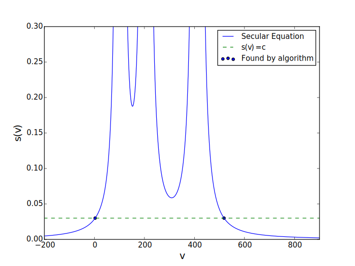
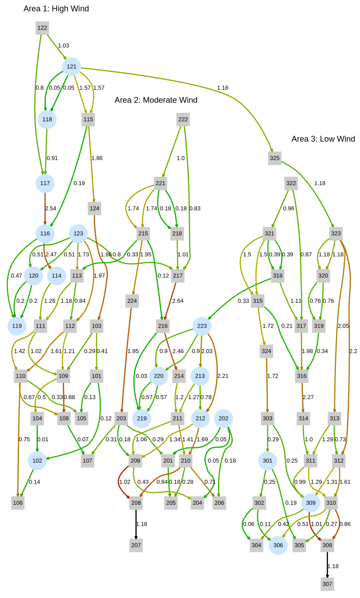

Overview¶
Part 1: Instantaneous analysis¶
- Approximate current constraints
Part 2: Time-coupled analysis¶
- New framework with new problems
- Minimize deviations -- solved
- Maximize second-order angle differences -- proposed
Introducing instanton analysis¶
Wind forecasts are often unreliable. System operators cannot predict the wind's next move.
Most wind fluctuations are harmless, but certain wind patterns violate system constraints.
Instanton analysis uses optimization to rank dangerous patterns by likelihood.
New insight into system vulnerability allows system operators to be prepared.
Part 1: Instantaneous analysis¶
Previous analysis has provided powerful insight and promising results, but the models used have been either
- full DC (speed with no guarantee of accuracy), or
- full AC (accuracy with no guarantee of a solution).
We wanted to study in-between methods that improve accuracy while maintaining nice solution properties (like convexity).
How does instantaneous instanton analysis work?¶
Consider a transmission network with a significant number of wind farms.
Suppose the demand forecast is accurate, and generation dispatch does not change.
Suppose the wind forecast is not entirely accurate. Let each wind farm's active power output be an optimization variable.
Optimization problem¶
Objective
System constraints
Strain constraint
Objective: minimize the normed distance between the vector of wind optimization variables and their forecast values.
\begin{align} \min & \frac{1}{2} \left( R - R^0 \right)^\top \Lambda \left( R - R^0 \right) \end{align}This ensures we find a likely dangerous pattern.
(Note the covarianace matrix $\Lambda$.)
System constraints: power balance, angle reference, generator response parameter $\alpha$.
\begin{align} \text{subject to:}& \\ \sum_k( Y_{ik} \theta_k) & = G_{i} + R_{i} - D_{i} && \forall i \in N \\ G_i &= G_{i}^0 + k_i\alpha && \forall i \in N_g \\ \theta_{ref} & = 0 && \text{ (angle reference)} \\ R_{i} &\geq 0 && \forall i \in N_r \\ R_{i} &= 0 && \forall i \in N\backslash N_r \end{align}Strain constraint: We add one additional constraint to force a line to saturate.
\begin{align} \theta_i - \theta_k & = x_{ik} P_{ik}^{lim} && \text{for each } (i,k) \in G \\ \end{align}Outcome¶
We obtain an instanton candidate (or "dangerous wind pattern") for each line in the network.
Each candidate has a "score" (its distance from the wind forecast).
We call the candidate with the lowest score the instanton.
What does this look like?¶
Suppose we have a network with three nodes and three edges.
 Assume:
Assume:
- DC power flow approximation holds
- The conventional generator takes up all slack and is the angle reference
Variables¶
- Two wind output decision variables: $R_{1}$ and $R_{2}$
- Two bus phase angle variables: $\theta_1$ and $\theta_2$
Power balance and constraints¶
Power balance equations:
$$\begin{align} R_{1} - d_1 &= y_{12}(\theta_1 - \theta_2) + y_{1S}\theta_1 \\ R_{2} - d_2 &= y_{12}(\theta_2 - \theta_1) + y_{2S}\theta_2 \\ \end{align}$$Line constraints:
$$\begin{align} |y_{12}(\theta_1 - \theta_2)| &\leq P^{lim} \implies & |\theta_1 - \theta_2| &\leq \frac{P^{lim}}{y_{12}} \\ \\ |y_{1S}(\theta_1)| &\leq P^{lim} \implies & |\theta_1| &\leq \frac{P^{lim}}{y_{1S}} \\ \\ |y_{2S}(\theta_2)| &\leq P^{lim} \implies & |\theta_2| &\leq \frac{P^{lim}}{y_{2S}} \end{align}$$Feasible region of optimization¶
Let's plug in some numbers and plot this set of inequalities.
Plim = 1;
y12 = 0.6;
y1S = 0.3;
y2S = 0.2;
R1 = 0.3;
R2 = 1.4;
(Only the first quadrant is shown.)
Contribution: approximate current constraints¶
Previous convex instanton analysis uses the DC power flow approximation.
This involves four assumptions:
- No line resistance
- Small angle differences
- Flat voltage profile
- No reactive power flows
We can improve solution accuracy by getting rid of the last two assumptions.
Approximate line current¶
DC power flow assumes a "flat" voltage profile, but we have voltage magnitude data.
Let's put it to use.
Derive an approximate expression for line current:
\begin{align} \lvert I_{ik} \rvert^2 &\approxeq B_{ik} \left( V_i^2 + V_k^2 - 2V_iV_k\cos\theta_{ik} \right),\quad \theta_{ik} = \theta_i - \theta_k \end{align}(Details in paper and appendix.)
We still assume no resistance, but now we allow for non-flat voltage profiles.
How good is our approximation?¶
Let's plot the exact and approximate current expressions on the same chart.
$$\begin{align} I_{ik} &= Y_{ik}(E_i-E_k) &\qquad \lvert I_{ik} \rvert^2 &\approxeq B_{ik} \left( V_i^2 + V_k^2 - 2V_iV_k\cos\theta_{ik} \right) \end{align}$$If resistance is zero:
 Perfect overlap.
Perfect overlap.
Now let's introduce non-zero resistance. A typical line has $\lvert B_{ik}/G_{ik} \rvert \approx 4$, so let's plot that case:

Our approximation is good as long as line resistance isn't too big.
Why use this approximation?¶
It would make no sense to use the exact expression. The rest of our analysis assumes $r=0$.
More importantly, our current flow approximation is better than the DC approximation.

Any line with a significant voltage magnitude difference across it is more vulnerable than linear (DC) instanton analysis tells us.
Implementation and results¶
Solve the approximate current expression for angle difference:
\begin{align} \lvert I_{ik}^2 \rvert &\approxeq \frac{V_i^2 + V_k^2 - 2V_iV_k\cos \theta_{ik}}{x_{ik}^2} \\ \implies \theta_i - \theta_k &= \cos^{-1}\left( \frac{V_i^2 + V_k^2 - (\lvert I_{ik}^{lim} \rvert x_{ik})^2}{2V_iV_k} \right) \end{align}Same form as the DC instanton strain constraint:
\begin{align} \theta_i - \theta_k & = x_{ik} P_{ik}^{lim} \end{align}Simply swap out this DC constraint for our approximate current one.
Compare: DC results¶

Compare: approximate current results¶

Differences are due to the non-flat voltage profile of the RTS-96:

Part 2: Time-varying instanton analysis¶
We want instanton analysis to help system operators. We solicit their feedback.
Here's what John Adams of ERCOT says:
"I don't care."
System operators allow temporary line overloads all the time.
They understand that lines trip due to heat-induced sag, not instantaneous current (IEEE Standard 738).
In an operating environment, instanton analysis must
- keep track of line temperature
- Accommodate changes in power flow and ambient conditions
This motivates a new instanton framework.
Contribution: temporal instanton framework¶
What is temporal instanton analysis?¶
Previous instanton analysis: instantaneous
Minimize forecast deviations
Power balance
Single angle difference
New framework: temporal
Minimize forecast deviations across multiple time steps
Power balance
Line temperature constraint (heat added across multiple time steps)
What makes it harder?¶
Previous instanton analysis: instantaneous
Quadratic program with analytic solution.
New framework: temporal
Non-convex QCQP with multiple solutions.
Remainder of talk¶
Thermal constraint
Temporal instanton model
Temporal optimization problem
Solution
Results
Thermal constraint¶
Losses
Euler integration
Recursive relationship
Losses¶
Heat is a result of line losses.
Starting with the AC line loss expression, Almassalkhi and Hiskens (2014) derived this:
\begin{align} f_{ij}^{\text{loss}} &\approx r_{ij}\left(\frac{\theta_{ij}}{x_{ij}}\right)^2 \end{align}Here we make three assumptions:
Voltage magnitudes are all 1 pu
Cosine is represented by its second-order Taylor expansion
$x_{ij} \geq 4r_{ij}$ (line reactance is at least four times as great as resistance).
Euler integration¶
Changes in line temperature are found by Euler integration:
\begin{align} \Delta T_{ij}[t+1] &= \tau_{ij}\Delta T_{ij}[t] + \rho_{ij}\Delta f_{ij}^\text{loss}[t] + \delta_{ij}\Delta d_{ij}[t]~, \end{align}where $\tau$, $\bar{\gamma}_c$, and $\rho_{ij}$ are known (skipping definitions).
Recursive relationship between temperature at time $t+1$ and temperature at time $t$.
Recursive relationship¶
Repeatedly substituting into this equation, we express change in line temperature at time $t^*$ as:
\begin{align} \Delta T_{ik}[t^*] &= \frac{\rho_{ik} r_{ik}}{x_{ik}^2}\sum_{t=1}^{t^*}\tau_{ik}^{t-1}\theta_{ik}^2[t^*-t]~ + \delta_{ik} \sum_{t=1}^{t^*}\tau_{ik}^{t-1}\Delta d_{ik} [t^* - t] \end{align}- The first term varies with angle differences.
- The second term is constant with respect to all power flow variables.
Moving all constants to the left-hand side, we find:
\begin{align} \Delta T_{ik}[t^*] - \delta_{ik} \sum_{t=1}^{t^*}\tau_{ik}^{t-1}\Delta d_{ik} [t^* - t] = \frac{\rho_{ik}r_{ik}}{x_{ik}^2} \sum_{t=1}^{t^*} \tau_{ik}^{t-1}\theta_{ik}^2[t^* - t] \end{align}The RHS is a weighted, scaled two-norm of the vector of angle difference variables $\theta_{ik}[t],~ t\in \{1,\ldots,t^*\}$.
We can write the temperature constraint as $\lVert \hat{\theta}_{ik}\rVert^2 = c^2$, where
\begin{align} \hat{\theta}_{ik,t} &= \tau^{\frac{t^*-t}{2}}(\theta_{i,t} - \theta_{k,t}) \end{align}and $c$ accounts for scaling and known parameters.
Optimization problem¶
- Objective
- System constraints
- Strain constraint
Objective: minimize the normed distance between the vector of wind optimization variables and their forecast values.
\begin{align} \min & \sum_{t=1}^{T} dev_t^\top Q_{dev} dev_t \end{align}(Note that $Q_{obj}$ may be identity or could encode correlation.)
System constraints: power balance, angle reference, generator response parameter $\alpha$.
\begin{align} \text{subject to:} \\ \sum_k Y_{ij} \theta_{ij,t} & = (G_{i,t} + \rho_{i,t} + x_{i,t}) - D_{i,t} ~ \forall i \in \mathcal{N},~t\in 1... T \\ G_t &= G_{0,t} + k\alpha_t \quad \forall t\in 1\ldots T \\ \theta_{ref,t} & = 0 \quad \forall t\in 1\ldots T \\ \end{align}Strain constraint: Force a line to sag.
\begin{align} \Delta T_{ij}[T] &= \Delta T_{ij}^\text{lim}\quad \text{for some }(i,j)\in \mathcal{G} \end{align}Strain constraint: Force a line to sag.
\begin{align} \Delta T_{ij}[T] &= \Delta T_{ij}^\text{lim}\quad \text{for some }(i,j)\in \mathcal{G} \end{align}From what we just discussed, this is really a norm constraint on a vector of scaled angle differences:
\begin{align*} \lVert \hat{\theta}_{ij}\rVert^2 &= c^2~, \end{align*}where $c$ is based on line and ambient condition parameters, and
\begin{align} \hat{\theta}_{ij,t} &= \tau^{\frac{t^*-t}{2}}(\theta_{i,t} - \theta_{j,t})~. \end{align}Recast as optimization problem¶
General form: quadratic objective function with linear and quadratic constraints. Stacking all variables into a single vector $z$, we find:
\begin{align} && \min z^\top Q_{obj} z &\\ & s.t. & Az &= b \\ && z^\top Q_{\theta}z &= c \end{align}Let's consider each component:
Variables: $z$
Objective: $Q_{obj}$
Linear constraints: $A$ and $b$
Quadratic constraint: $Q_\theta$
Variables: $z$¶
Stack variables from all time steps. Put $\hat{\theta}_{ik}$ at the end. \begin{align} z &= \begin{bmatrix} dev^{(1)\top} & \theta^{(1)\top} & \alpha^{(1)} & \cdots & dev^{(T)\top} & \theta^{(T)\top} & \alpha^{(T)} & \hat{\theta}_{ik}^\top \end{bmatrix}^\top \end{align}
Objective: $Q_{obj}$¶
The objective weights only deviation variables $dev$.
Example: suppose there are two time steps and correlation is represented by $Q_{dev}$. Then
$$ z = \begin{bmatrix} dev^{(1)\top} & \theta^{(1)\top} & \alpha^{(1)} & dev^{(2)\top} & \theta^{(2)\top} & \alpha^{(2)} & \hat{\theta}_{ik}^\top \end{bmatrix}^\top $$and $Q_{obj}$ is given by:
\begin{align*} Q_{obj} = \begin{bmatrix} Q_{dev} & 0 & 0 & 0 & 0 & 0 & 0 \\ 0 & 0 & 0 & 0 & 0 & 0 & 0 \\ 0 & 0 & 0 & 0 & 0 & 0 & 0 \\ 0 & 0 & 0 & Q_{dev} & 0 & 0 & 0 \\ 0 & 0 & 0 & 0 & 0 & 0 & 0 \\ 0 & 0 & 0 & 0 & 0 & 0 & 0 \end{bmatrix} \end{align*}Linear constraints: $A$ and $b$¶
$A$ has a block diagonal structure where each block is $(n+1)\times(n_r+n)$.
- The first $n$ rows describe power balance and distributed slack behavior. We have the following power balance equation for each node:
- The last row in each group of $(n+1)$ fixes the angle reference to zero.
Quadratic constraint: $Q_\theta$¶
Recall that the line temperature constraint in terms of $\hat{\theta}_{ij}$ is \begin{align*} \lVert \hat{\theta}_{ij}\rVert^2 &= c^2~. \end{align*}
Because the last $T$ elements of $z$ contain $\hat{\theta}_{ij}$, $Q_\theta$ is all zeros with a $T\times T$ identity matrix in the lower-right corner.
Solution¶
Quadratic equality constraint makes the problem non-convex.
It does look nice though.
Our QCQP is similar to the "trust-region subproblem".
Dan Bienstock's insight from this related problem helped us derive a solution for ours.
Here's how we solve it:
Translation to change $Az=b$ into $Ay=0$
Kernel mapping to render linear constraints implicit
Rotation to restore constraint's norm structure
Elimination of unconstrained variables
Solution via enumeration
Divide the vector of variables into three groups:
- $z_1\in\mathbb{R}^{N_RT}$ contains wind deviations
- $z_2\in\mathbb{R}^{(N+1)T}$ contains angle and mismatch variables
- $z_3\in\mathbb{R}^T$ contains auxiliary angle difference variables (line temperature calculation).
(This partition of $z$ is independent of how the variables are ordered.) With this notation, the problem becomes
\begin{align} \min\quad z_1^\top &Q_z z_1 \\ s.t.\quad \begin{bmatrix}A_1 & A_2 & A_3 \end{bmatrix}\begin{bmatrix} z_1 \\ z_2 \\ z_3\end{bmatrix} &= b \\ z_3^\top z_3 &= c, \end{align}where $Q_z$ is $Q_{dev}$ repeated in block-diagonal fashion $T$ times.
Several changes of variables may be used to obtain an equivalent form whose solution is straightforward.
Step 1: Translation¶
Change variables from $z$ to $y=z-z^*$, where $z^*\in\{z:Az=b\}$.
This translation transforms $Az=b$ into $Ay=0$.
To prevent the change from introducing a linear term into the quadratic constraint, we require $z_3^*=0$.
Thus, the subvectors $z_1^*$ and $z_2^*$ must satisfy
\begin{align} A_1z_1^* + A_2z_2^* &= b. \end{align}Factorize $A$ to find a min-norm $z^*$ that satisfies this criterion.
After translation, the problem becomes
\begin{align} \min\quad y_1^\top &Q_z y_1 + 2 y_1^\top Q_z z_1^* \\ s.t.\quad Ay &= 0 \\ y_3^\top y_3 &= c. \end{align}Step 2: Kernel mapping¶
Intuitive explanation of $Ay=0$: any solution must lie in the nullspace (kernel) of $A$.
Let $\dim \mathcal{N}(A) =k$ be the dimension of this nullspace.
Let $y=Nx$ where the $k$ columns of $N$ span $\mathcal{N}(A)$. This change of variables is akin to a rotation, but reduces the problem dimension to $k$.
Partition $N$:
\begin{align} \begin{bmatrix} y_1 \\ y_2 \\ y_3 \end{bmatrix} = \begin{bmatrix} N_1 \\ N_2 \\ N_3 \end{bmatrix} x \end{align}Change variables:
\begin{align} \min\quad &x^\top (N_1^\top Q_zN_1) x + 2x^\top (N_1^\top Q_zz_1^*) \\ s.t.\quad &x^\top N_3^\top N_3 x = c. \end{align}All feasible solutions lie in the nullspace of $A$, so the linear constraints are now implicit.
Step 3: Restoring the norm constraint¶
After kernel mapping, the quadratic constraint is no longer a norm constraint. This can be corrected in two steps.
A. Perform an eigendecomposition¶
$$N_3^\top N_3 = UDU^\top$$Let $\hat{x} = U^\top x$. The constraint is diagonal in terms of $\hat{x}$:
\begin{equation} x^\top N_3^\top N_3 x = \hat{x}^\top D\hat{x} \end{equation}where $D$ is diagonal and has at most $T$ nonzero elements.
The right side may be expanded into:
\begin{equation} \begin{bmatrix} \hat{x}_1^\top & \hat{x}_2^\top \end{bmatrix} \begin{bmatrix} 0 & 0 \\ 0 & \hat{D} \end{bmatrix} \begin{bmatrix} \hat{x}_1 \\ \hat{x}_2 \end{bmatrix} \end{equation}B. Change variables¶
from $\hat{x}$ to $w$.
The variables $x$, $\hat{x}$ and $w$ are related through:
\begin{align} \begin{bmatrix} w_1 \\ w_2 \end{bmatrix} &= \begin{bmatrix} I & 0 \\ 0 & \hat{D}^{1/2} \end{bmatrix} \begin{bmatrix} \hat{x}_1 \\ \hat{x}_2 \end{bmatrix} = K\hat{x} \\ \nonumber \implies w &= KU^\top x. \end{align}(Note that $x = UK^{-1}w$ because $UU^\top = I$.)
In terms of $w$, the constraint takes the form of a norm:
\begin{equation} \hat{x}^\top D\hat{x} = \hat{x}_2^\top \hat{D}^{1/2}\hat{D}^{1/2}\hat{x}_2 = w_2^\top w_2 \end{equation}After substitution into the objective function, the full problem becomes:
\begin{align} \min\quad &w^\top Bw + w^\top b \\ s.t.\quad &w_2^\top w_2 = c \end{align}where
- $ B = K^{-1}U^\top N_1^\top Q_z N_1 UK^{-1} $
- $ b = 2 K^{-1}U^\top N_1^\top Q_z z_1^* $
Note that $w_1$ is unconstrained. We will take advantage of this next.
Step 4: Eliminate $w_1$¶
For a fixed $w_2$, we can use "partial" KKT conditions to find $w_1$ such that the objective is minimized.
Expand the objective:
\begin{align*} f(w) &= \begin{bmatrix} w_1^\top & w_2^\top \end{bmatrix} \begin{bmatrix} B_{11} & B_{12} \\ B_{12}^\top & B_{22}\end{bmatrix} \begin{bmatrix} w_1 \\ w_2 \end{bmatrix} + \begin{bmatrix} w_1^\top & w_2^\top \end{bmatrix} \begin{bmatrix} b_1 \\ b_2\end{bmatrix} \\ &= w_1^\top B_{11}w_1 + 2w_1^\top B_{12}w_2 + w_2^\top B_{22}w_2 + w_1^\top b_1 + w_2^\top b_2. \end{align*}Set the partial derivative with respect to $w_1$ equal to zero:
\begin{align} \nonumber \frac{\partial f}{\partial w_1} &= 2w_1^\top B_{11} + 2w_2^\top B_{12}^\top + b_1^\top = 0 \\ \implies w_1 &= -B_{11}^{-1}\left(B_{12}w_2 + \frac{1}{2}b_1 \right). \end{align}After substitution, the objective depends only on $w_2$:
\begin{align*} f(w_2) &= w_2^\top\left(B_{22} - B_{12}^\top B_{11}^{-1} B_{12}\right)w_2 + w_2^\top (b_2 - B_{12}^\top B_{11}^{-1}b_1). \end{align*}(The constant term was omitted.)
The optimization problem becomes:
\begin{align} \min\quad & w_2^\top \hat{B}w_2 + w_2^\top \hat{b} \\ s.t.\quad & w_2^\top w_2 = c, \end{align}where
- $ \hat{B} = B_{22} - B_{12}^\top B_{11}^{-1}B_{12} $
- $ \hat{b} = b_2 - B_{12}^\top B_{11}^{-1}b_1 $
This is a QCQP in $T$ dimensions with a single norm constraint.
Step 5: Solution via enumeration¶
The problem is diagonalizable. For brevity we assume it has been diagonalized.
Let $v$ be the Lagrange multiplier associated with the constraint and write the first-order optimality condition:
\begin{align} \nonumber \frac{\partial \mathcal{L}(w_2,v)}{\partial w_2} &= 2\hat{B}w_2 + \hat{b} - v(2w_2) = 0 \\ \implies \hat{B}w_2 + \frac{1}{2}\hat{b} &= vw_2. \end{align}After ruling out $u=0$ and $u=D_{ii}$, this linear system yields $w_2$ for fixed $v$:
\begin{equation} w_{2,i} = \frac{\hat{b}_i/2}{v - \hat{B}_{i,i}} \end{equation}An optimal $w_2$ must also be feasible, so we substitute the above into the constraint to obtain the "secular equation":
\begin{equation} s(v) = \sum_{i}\left( \frac{\hat{b}_i /2}{v - \hat{B}_{i,i}}\right)^2 = c. \end{equation}Note that $s(v)$ has one pole per unique nonzero diagonal element of $\hat{B}$.
 Solutions are intersections of $s(v)$ with the horizontal line $s(v)=c$. They can be computed numerically with a simple binary search algorithm.
After minimizing over the solution candidates, we can reverse all variable changes to find an optimal solution $z^*$.
Results¶
Network: wind-augmented RTS-96
Consider a scenario unfolding over three time steps
- First the wind forecast is 50% of some nominal value.
- Next it is equal to the nominal value.
- Finally it is scaled to 150% of nominal.
Throughout this wind ramping, generator dispatch and demand remain constant.
Choose $c=0.03$ and $\tau=0.5$.
In this scenario, the line between buses 121 and 325 is most susceptible to wind-induced sag.
In other words, of all dangerous wind patterns that could occur during the wind ramp, the most likely is a pattern that overheats the line between buses 121 and 325.
Here is the system at the second time step:

The largest deviation in the instanton pattern is $0.73$ pu, well within the range of wind forecast values (whose maximum is $1.2$ pu).
Solving a different problem: uncertainty-constrained temperature maximization¶
What if we let line temperature be the objective?
We get a quadratic program like this:
\begin{align} && z_{ik}^* = \max~ & z^\top Q_{\theta} z \\ s.t. && Az &= b \\ && x &\leq c\cdot P0 \\ && x &\geq -c\cdot P0 \end{align}Not convex, but may have strong duality.
Future work¶
Better visualization
Solution of max-temp problem
Expansion and publication of instantaneous instanton contributions
Acknowledgements¶
- Ian Hiskens
- Misha Chertkov
- Scott Backhaus
- Dan Bienstock
References¶
[1] M. Chertkov, F. Pan, and M. Stepanov, “Predicting failures in power grids: The case of static overloads,” IEEE Transactions on Smart Grid, vol. 2, no. 1, pp. 162–172, Mar. 2011.
[2] M. Chertkov, M. Stepanov, F. Pan, and R. Baldick, “Exact and efficient algorithm to discover extreme stochastic events in wind generation over transmission power grids,” in Proc. 2011 50th IEEE Conference on Decision and Control and European Control Conference (CDC-ECC), 2011, pp. 2174–2180.
[3] S. Baghsorkhi and I. Hiskens, “Analysis tools for assessing the impact of wind power on weak grids,” in Proc. Systems Conference (SysCon), 2012 IEEE International, 2012, pp. 1–8.
[4] H. Banakar, N. Alguacil, and F. Galiana, “Electrothermal coordination part I: theory and implementation schemes,” IEEE Transactions on Power Systems, vol. 20, no. 2, pp. 798–805, May 2005.
[5] “IEEE standard for calculating the current-temperature of bare overhead conductors,” IEEE Std 738-2012
[6] M. Almassalkhi and I. Hiskens, “Model-predictive cascade mitigation in electric power systems with storage and renewables – part I: Theory and implementation,” IEEE Transactions on Power Systems, vol. PP, no. 99, pp. 1–11, 2014.
[7] O. Mehanna, K. Huang, B. Gopalakrishnan, A. Konar, and N. Sidiropou- los, “Feasible point pursuit and successive approximation of non-convex QCQPs,” IEEE Signal Processing Letters, vol. PP, no. 99, pp. 1–1, 2014.
[8] D. Bienstock and A. Michalka, “Polynomial Solvability of Variants of the Trust-region Subproblem,” in Proceedings of the Twenty-Fifth Annual ACM-SIAM Symposium on Discrete Algorithms, ser. SODA ’14. Portland, Oregon: SIAM, 2014, pp. 380–390. [Online]. Available: http://dl.acm.org/citation.cfm?id=2634074.2634102
[9] H. Pandzic, Y. Dvorkin, T. Qiu, Y. Wang, and D. Kirschen. Unit Commitment under Uncertainty - GAMS Models, Library of the Renewable Energy Analysis Lab (REAL), University of Washington, Seattle, USA. [Online]. Available: http://www.ee.washington.edu/research/real/gams_code.html
Appendix: derivation of approximate current constraint¶
A current flow constraint:
$$\begin{align} \lvert I_{ik} \rvert &\leq I_{ik}^{max} \\ \lvert I_{ik} \rvert^2 &\leq (I_{ik}^{max})^2 \\ [Re( I_{ik} )]^2 + [Im( I_{ik} )]^2 &\leq (I_{ik}^{max})^2 \\ \end{align}$$Expand to show real and imaginary parts of line current $I_{ik}$:
$$\begin{align} Re( I_{ik} ) &= G_{ik}[Re(E_i) - Re(E_k)] - B_{ik}[Im(E_i) - Im(E_k)] \\ Im( I_{ik} ) &= B_{ik}[Re(E_i) - Re(E_k)] + G_{ik}[Im(E_i) - Im(E_k)] \\ \end{align}$$These expressions are nasty, but remember we are keeping two of the four DC assumptions. Since resistance is negligible, we can set $G_{ik}=0$:
Our assumption simplifies the expressions for real and imaginary currents:
$$\begin{align} Re( I_{ik} ) &\approxeq - B_{ik}[Im(E_i) - Im(E_k)] \\ Im( I_{ik} ) &\approxeq ~~~B_{ik}[Re(E_i) - Re(E_k)] \\ \end{align}$$Current constraint expression cont'd.¶
Add squares of real and imaginary parts to obtain current magnitude:
$$\begin{align} Re( I_{ik} )^2 &= B_{ik}^2[Im(E_i) - Im(E_k)]^2 \\ Im( I_{ik} )^2 &= B_{ik}^2[Re(E_i) - Re(E_k)]^2 \\ \lvert I_{ik} \rvert^2 = Re( I_{ik} )^2 + Im( I_{ik} )^2 &= B_{ik}^2[\left( Im(E_i) - Im(E_k) \right)^2 + \left( Re(E_i) - Re(E_k) \right)^2] \end{align}$$Simplify:
$$\begin{align} \lvert I_{ik} \rvert^2 &= B_{ik}^2[\left( Im(E_i) - Im(E_k) \right)^2 + \left( Re(E_i) - Re(E_k) \right)^2] \\ &= B_{ik} \left[ Re(E_i)^2 + Im(E_i)^2 + Re(E_k)^2 + Im(E_k)^2 -2\left( Re(E_i)Re(E_k) + Im(E_i)Im(E_k) \right) \right] \\ &= B_{ik} \left[ V_i^2 + V_k^2 -2V_iV_k\left( \sin\theta_i\sin\theta_k + \cos\theta_i\cos\theta_k \right) \right] \\\\ \lvert I_{ik} \rvert^2 &\approxeq B_{ik} \left( V_i^2 + V_k^2 - 2V_iV_k\cos\theta_{ik} \right),\quad \theta_{ik} = \theta_i - \theta_k \end{align}$$Now we have an expression for the squared current magnitude on a line (assuming the line's resistance is zero).
Where do the voltage values come from?¶
Because we retain two of the DC approximation assumptions, we reason that voltages are completely decoupled from active power. Also:
- All generators are PV buses that fix voltage.
- Non-generator bus voltages are uniquely determined by reactive power injections at all nodes.
- Thus, all voltage magnitudes are fixed and independent of angles and active power.